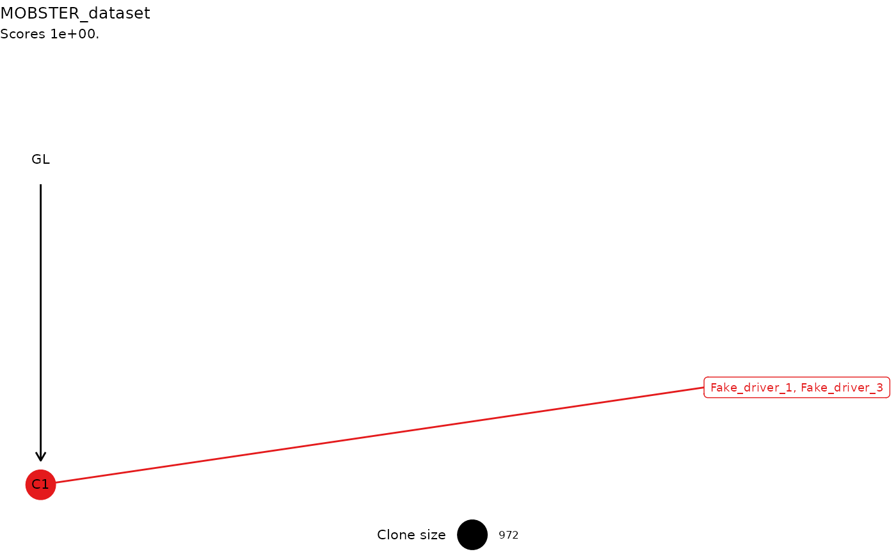
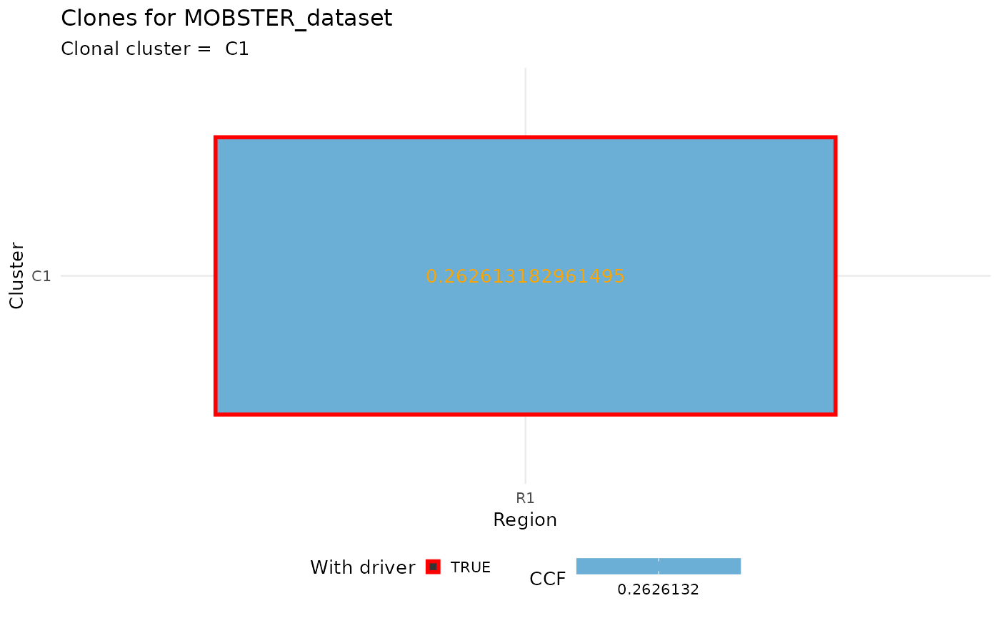
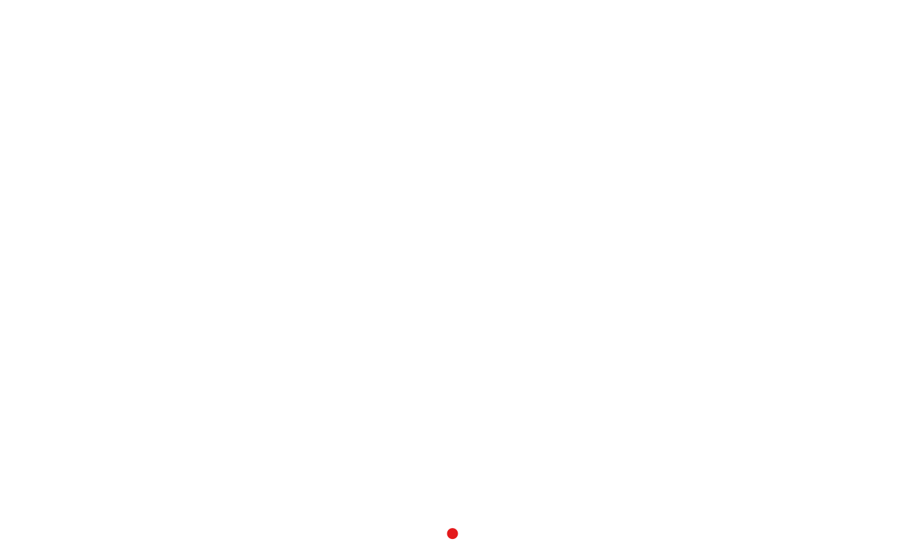
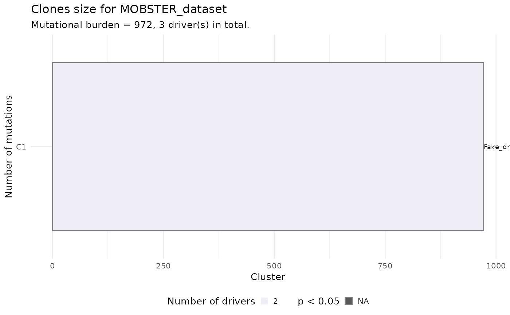

This function uses the output fit of MOBSTER
to create a call to ctree (https://caravagnalab.github.io/ctree/),
a package to create clone trees for cancer evolution models.
Creation of a clone tree requires annotations that are not usually
necessary for just a plain MOBSTER analyses. These annotations report the status of driver
and gene for each one of the input datapoints, and should
be part of data given in input for MOBSTER (so they should be in x$data).
MOBSTER clusters are only used if the come from a Beta distribtutions; that is the tail is removed. The clonal cluster is estimated from the cluster with the highest parameter value for the Beta peak.
The output is the result of calling the constructor ctree::cetrees
on the input clustering results x.
Examples
# We take one of the released datasets
x = mobster::LU4_lung_sample$best
# Annotate some random mutation as driver, we need that to build the trees with ctree
x$data$is_driver = FALSE
x$data$is_driver[1:3] = TRUE
x$data$driver_label = ""
x$data$driver_label[1] = "Fake_driver_1"
x$data$driver_label[2] = "Fake_driver_2"
x$data$driver_label[3] = "Fake_driver_3"
# Get the trees
trees = get_clone_trees(x)
#> [ ctree ~ clone trees generator for MOBSTER_dataset ]
#>
#> # A tibble: 1 × 5
#> cluster R1 nMuts is.clonal is.driver
#> <chr> <dbl> <dbl> <lgl> <lgl>
#> 1 C1 0.263 972 TRUE TRUE
#>
#> ! Model with 1 node, trivial trees returned
#> ✔ 1 trees with non-zero score, storing 1
#> [easypar] 2025-11-21 08:50:28.041822 - Overriding parallel execution setup [FALSE] with global option : FALSE
#>
#> This tree has 1 node, creating a monoclonal model disregarding the input matrix.
# Print and plot the first tree (top rank)
library(ctree)
ctree::print.ctree(trees[[1]])
#> [ ctree - ctree rank 1/1 for MOBSTER_dataset ]
#>
#> # A tibble: 1 × 5
#> cluster R1 nMuts is.clonal is.driver
#> <chr> <dbl> <dbl> <lgl> <lgl>
#> 1 C1 0.263 972 TRUE TRUE
#>
#> Tree shape (drivers annotated)
#>
#> \-GL
#> \-C1 [R1] :: Fake_driver_1, Fake_driver_3
#>
#> Information transfer
#>
#> GL ---> Fake_driver_1
#> GL ---> Fake_driver_3
#>
#> Tree score 1
#>
ctree::plot.ctree(trees[[1]])

ctree::plot_CCF_clusters(trees[[1]])

ctree::plot_icon(trees[[1]])

ctree::plot_clone_size(trees[[1]])
